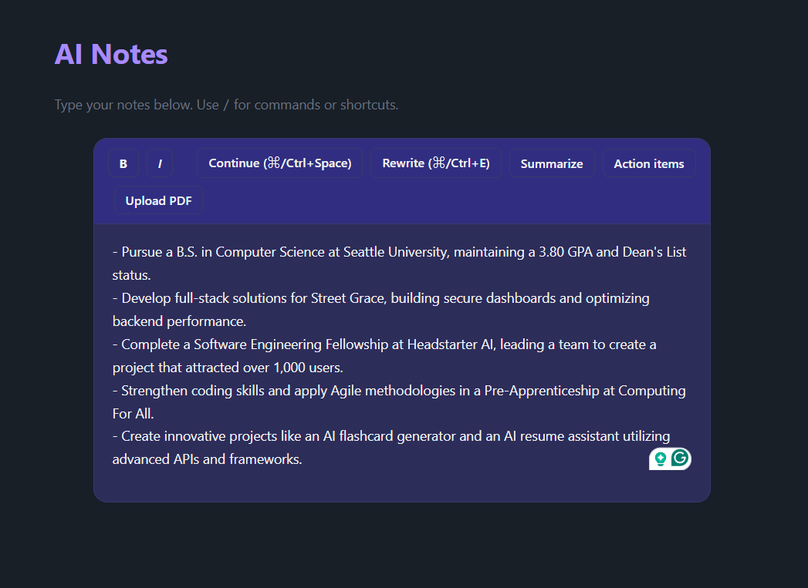
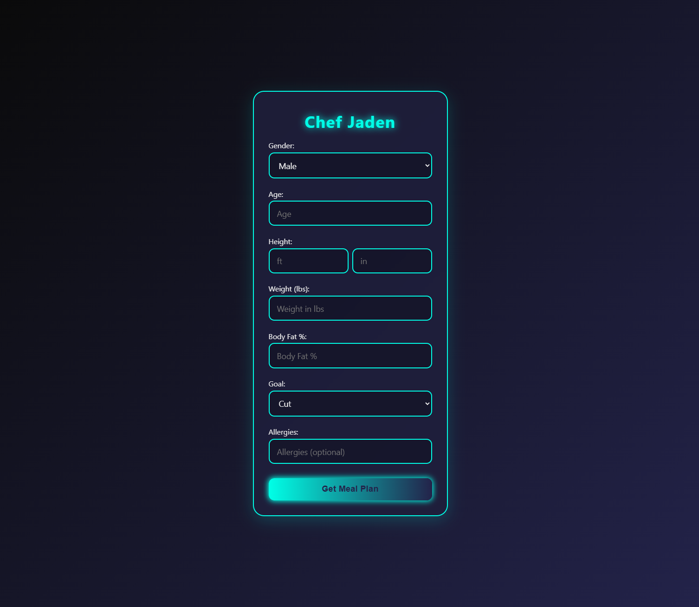
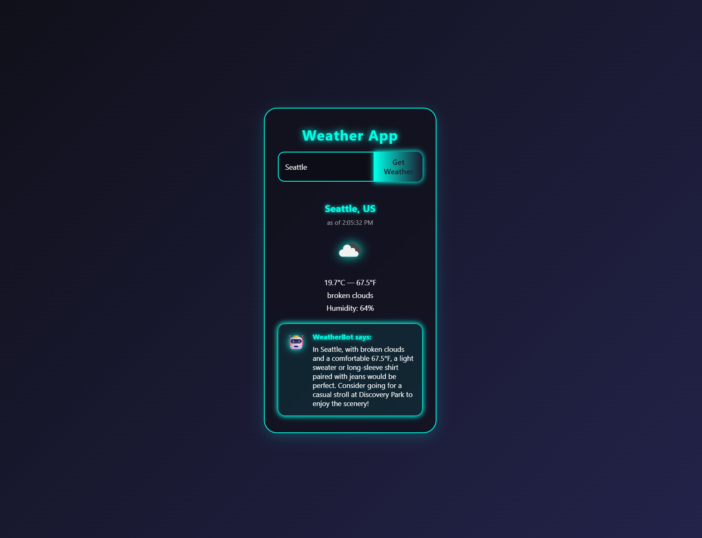
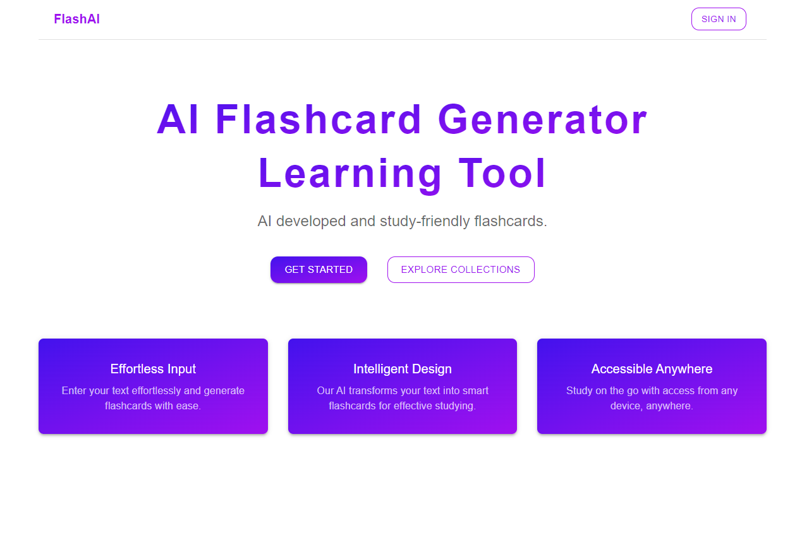
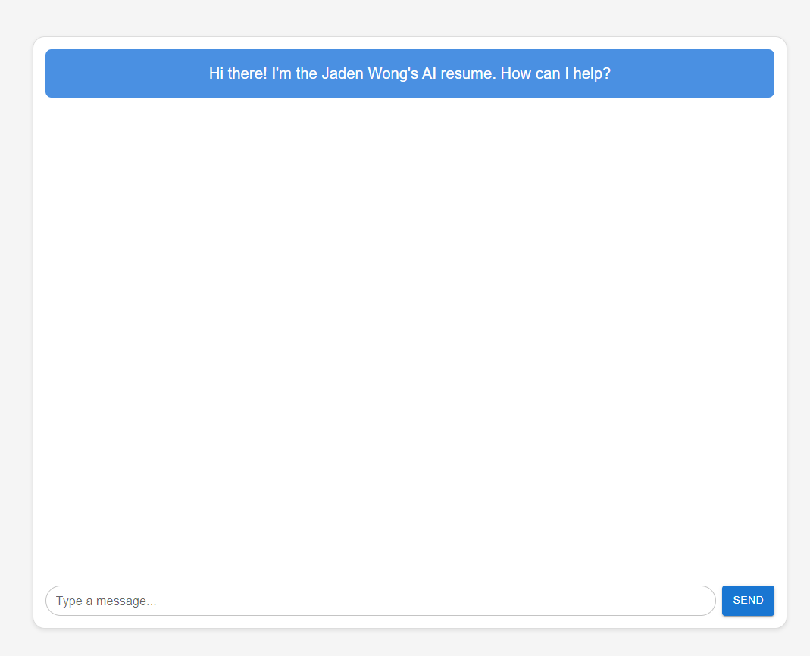
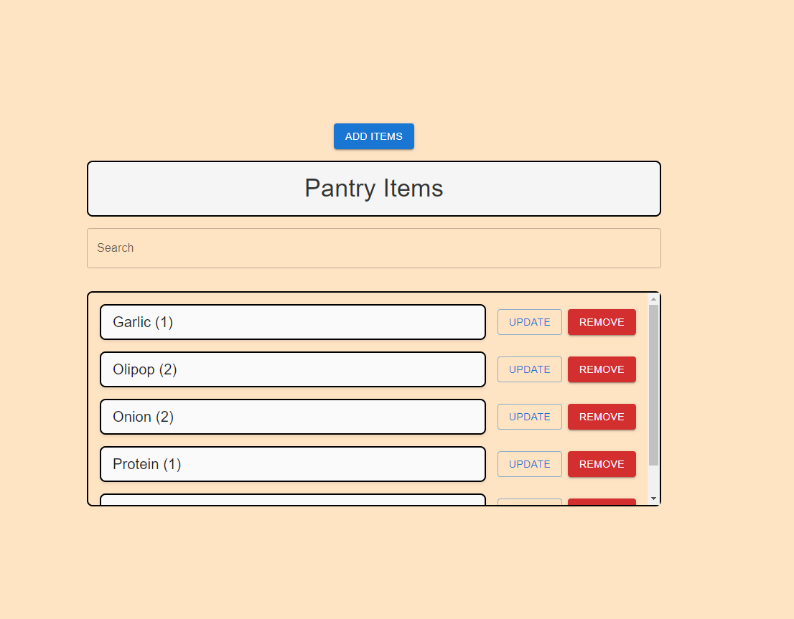

AI Notes
AI-powered note-taking application that lets users type or upload PDFs into a smart text editor, where the AI can enhance, expand, and refine content in real time.
Software Engineer
CS senior at Seattle University building AI-powered applications with Next.js, React, and OpenAI. Currently a SWE volunteer at Street Grace.
I'm a Senior at Seattle University pursuing a degree in Computer Science with a business specialization. I'm planning to pursue a master's in ML/AI.
I currently work as a Software Engineering Intern at Street Grace, contributing to secure, scalable software systems that support data-driven efforts to protect vulnerable youth.
I'm passionate about using AI to solve real problems and always looking for opportunities to learn and collaborate.

AI-powered note-taking application that lets users type or upload PDFs into a smart text editor, where the AI can enhance, expand, and refine content in real time.

A meal planner that collects user stats and uses OpenAI to generate a personalized meal plan with macro breakdowns.

Weather app using OpenAI and OpenWeather API to display current conditions and suggest activities based on the forecast.

Generate study flashcards from any topic using OpenAI, with user authentication via Clerk and data persistence through Firebase.

An AI chatbot that answers questions about my resume using Google Gemini's API, providing conversational access to my experience.

A full-stack pantry management app using Firebase for data persistence and Next.js for the frontend, deployed on Vercel.
Street Grace
At Street Grace, a national nonprofit working to end the commercial sexual exploitation of children, I contribute as a Software Engineering Intern on secure, scalable software systems that support data-driven prevention and protection efforts. I work across the stack to build reliable tools, optimize performance, and translate real-world needs into impactful technical solutions.
Headstarter
Engaged in a 7-week software engineering fellowship involving 5 AI projects, weekend hackathons, and a final project. Gained mentorship from experienced engineers through coaching calls and team evaluations, and participated in events to enhance coding skills and problem-solving abilities.
Clifford Chance
Provided legal support for cyber breach issues, including advising on ICO Dawn Raids, GDPR compliance for data breaches, and defensive strategies for data center operations. Assisted clients with stakeholder notifications and breach response.
Computing For All (CFA)
Completed the program with a grade of A+, developing skills in Python, CSS, and HTML. The program emphasized project development, teamwork, and presentation skills.
Seattle University
Present · Seattle, WA
Senior pursuing a degree in Computer Science with a business specialization. Planning to pursue a master's in ML/AI.
Bellevue College / Interlake High School
2020 – 2023 · Bellevue, WA
Active in athletics with participation in basketball and track. Member of the Honor Society from 2020 to 2023.
I'm always interested in new opportunities, collaborations, and interesting projects. Let's connect.
Get in Touch